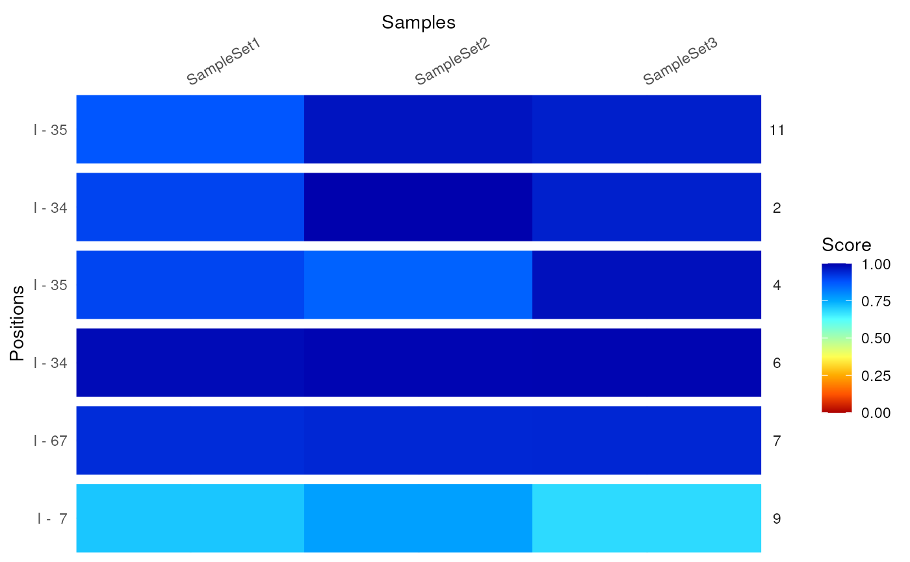

To compare data of different samples, a
ModifierSet can be used. To select the data
alongside the transcripts and their positions a
GRanges or a
GRangesList needs to be provided.
In case of a GRanges object, the parent column must match the
transcript names as defined by the out put of ranges(x), whereas in
case of a GRangesList the element names must match the transcript
names.
compare(x, name, pos = 1L, ...)
compareByCoord(x, coord, ...)
plotCompare(x, name, pos = 1L, normalize, ...)
plotCompareByCoord(x, coord, normalize, ...)
# S4 method for ModifierSet
compare(x, name, pos = 1L, normalize, ...)
# S4 method for ModifierSet,GRanges
compareByCoord(x, coord, normalize, ...)
# S4 method for ModifierSet,GRangesList
compareByCoord(x, coord, normalize, ...)
# S4 method for ModifierSet
plotCompare(x, name, pos = 1L, normalize, ...)
# S4 method for ModifierSet,GRanges
plotCompareByCoord(x, coord, normalize, ...)
# S4 method for ModifierSet,GRangesList
plotCompareByCoord(x, coord, normalize, ...)a Modifier or ModifierSet object.
Only for compare: the transcript name
Only for compare: pos for comparison
optional parameters:
alias a data.frame with two columns, tx_id and
name, to convert transcipt ids to another identifier
name Limit results to one specific gene or transcript
sequenceData TRUE or FALSE? Should the aggregate of
sequenceData be used for the comparison instead of the aggregate data if each
Modifier element? (default: sequenceData = FALSE)
compareType a valid score type to use for the comparison. If
sequenceData = FALSE this defaults to mainScore(x), whereas
if sequenceData = TRUE all columns will be used by setting
allTypes = TRUE.
allTypes TRUE or FALSE? Should all available score be
compared? (default: allTypes = sequenceData)
... passed on to subsetByCoord
coordinates of position to subset to. Either a GRanges or
a GRangesList object. For both types the 'Parent' column is expected
to match the transcript name. The GRangesList object is
unlisted and only non duplicated entries are retained.
either a single logical or character value. If it is a
character, it must match one of the names in the ModifierSet.
compareByCoord returns a
DataFrame and
plotCompareByCoord returns a ggplot object, which can be
modified further. The DataFrame contains columns per sample as well
as the columns names, positions and mod incorporated
from the coord input. If coord contains a column
Activity this is included in the results as well.
data(msi,package="RNAmodR")
# constructing a GRanges obejct to mark positive positions
mod <- modifications(msi)
coord <- unique(unlist(mod))
coord$score <- NULL
coord$sd <- NULL
# return a DataFrame
compareByCoord(msi,coord)
#> DataFrame with 6 rows and 6 columns
#> SampleSet1 SampleSet2 SampleSet3 names positions mod
#> <numeric> <numeric> <numeric> <factor> <factor> <character>
#> 1 0.900932 0.998134 0.953651 2 34 I
#> 2 0.899622 0.856241 0.976928 4 35 I
#> 3 0.984035 0.992012 0.993128 6 34 I
#> 4 0.934553 0.942905 0.943773 7 67 I
#> 5 0.709758 0.766484 0.681451 9 7 I
#> 6 0.874027 0.971474 0.954782 11 35 I
# plot the comparison as a heatmap
plotCompareByCoord(msi,coord)
#> Warning: Direct call of 'as.data.frame.numeric()' is deprecated. Use 'as.data.frame.vector()' or 'as.data.frame()' instead
#> Warning: Direct call of 'as.data.frame.numeric()' is deprecated. Use 'as.data.frame.vector()' or 'as.data.frame()' instead
#> Warning: Direct call of 'as.data.frame.numeric()' is deprecated. Use 'as.data.frame.vector()' or 'as.data.frame()' instead
#> Warning: Direct call of 'as.data.frame.factor()' is deprecated. Use 'as.data.frame.vector()' or 'as.data.frame()' instead
#> Warning: Direct call of 'as.data.frame.factor()' is deprecated. Use 'as.data.frame.vector()' or 'as.data.frame()' instead
